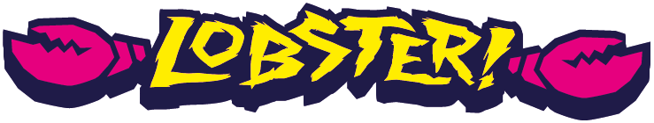

←→ edge · spin off the lipSpace hold to load, release to pop↑↓ front roll · backrollQE tantrum · front flipADWS grabsV cameraM soundP quality
Gamepad connected

presents
Thursday Yacht Club
No Risk, No Story.
The boat's doing 21 mph on a 65 ft line. Cut out wide, then edge hard back at the wake. Hold Space on the way in to load the line, and let go at the lip to pop. Clear both wakes for the bonus. Spins are set at the lip: tap a direction for a 180, hold it to wind up more. Keep pushing to tuck and spin faster, push back to open up and slow it. Land straight, or catch an edge and drink half the lake.
←→heelside / toeside edge · spin off the lip (tap for 180, hold to wind up more)
keep pushing / push backtuck to turn faster / open up to slow it
Spacehold to load, release to pop
↑↓front roll / backroll (hold through it)
QEtantrum / front flip
ADmelon / indy grab
WSnose / tail grab
VRPcamera · reset · quality
Gamepadleft stick edge · right stick pull down then flick · bumpers grab
Left sidedrag left / right to edge, and off the lip to spin
Left sidedrag up / down in the air for front roll / backroll
Pophold to load the line, let go at the lip
Grabshold any grab button while airborne
TantrumFront fliphold in the air to rotate
CamResettap to switch view or get back behind the boat
Keyboard, gamepad or touch · sound starts on first input